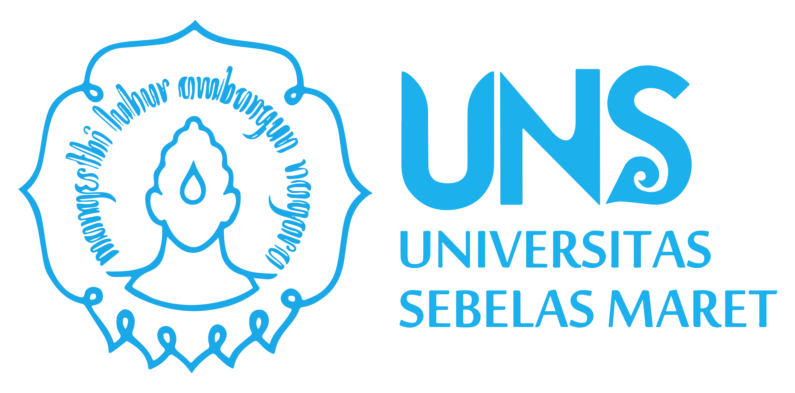

Program Studi Informatika Universitas Sebelas Maret (UNS) didirikan pada tahun 2007 dan merupakan salah satu program studi unggulan di UNS. Prodi ini telah menghasilkan banyak lulusan yang sukses di berbagai bidang, seperti teknologi informasi, keuangan, kesehatan, manufaktur, retail, dan pemerintahan.
Visi
Sebagai penyelenggara pendidikan bidang Informatika yang berkualitas dan mampu bersaing di tingkat internasional
Misi
- Menyelenggarakan kegiatan pendidikan dan pengajaran yang terencana, terarah, dan berkelanjutan
- Melakukan kajian dan penelitian di bidang Informatika yang bermanfaat dan meningkatkan daya saing bangsa
- Melaksanakan pengabdian pada masyarakat sesuai dengan kompetensi dalam bidang Informatika
Tujuan
- Dihasilkannya sarjana Informatika yang berkarakter, profesional, dan mandiri
- Dihasilkannya produk kajian dan penelitian pada bidang Informatika yang dapat berguna dan berdaya saing
- Diterapkannya hasil kajian dan penelitian untuk membantu meningkatkan kualitas kehidupan masyaraka
Fasilitas
- Laboratorium komputer yang modern
- Ruang kelas yang nyaman
- Akses internet yang cepat
Dosen
Prodi Informatika UNS memiliki dosen-dosen yang berpengalaman dan kompeten di bidangnya. Dosen-dosen ini aktif dalam penelitian dan publikasi ilmiah, sehingga dapat memberikan pengajaran yang berkualitas kepada mahasiswa.